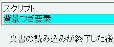
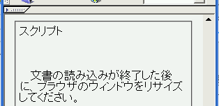

インラインスタイルシートを含む文書のソースを表示させたとき、style属性を含む開始タグの直後に、実際は存在しない、Ttyle属性が含まれる開始タグが現れることがある。さらに、この現象によってスタイルが乱れることがある。
<script type="text/javascript">
document.write('スクリプト');
</script>
<div style="position:relative; background:aqua;">背景つき要素</div>
文書の読み込みが終了した後に、ブラウザのウィンドウをリサイズしてください。
※ウィンドウのサイズを変更した後の状態のスクリーンショットです。
N7.02での表示
NN4.8での表示
以下はバグが発生しているときにNNで表示した前出の例示のソースです（見やすくするために改行を入れています。実際はstyle属性を持つdiv要素開始タグとdiv要素終了タグの間は改行がありません）。Ttyle属性を持つdiv要素開始タグのためにこの文書は終了タグがないdiv要素が存在するものとして扱われ、これがレイアウトを乱す原因になることがあります。
スクリプト <DIV style="position:relative; background:aqua;"> <DIV Ttyle="position:relative; background:aqua;"> 背景つき要素</DIV>
なお、このバグは必ず発生するわけではありません。以下の条件に該当する場合に特に発生しやすいようです。
NN4.8で不具合の発生が確認されました。